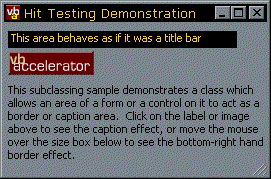
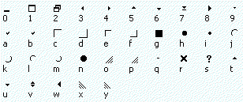

VB5 HitTest Sample Project and DLL (26K)
VB5 HitTest Sample Project and DLL (26K)
 VB6 HitTest Sample Project and DLL (22K)
VB6 HitTest Sample Project and DLL (22K)
 24 Nov 1998
24 Nov 1998
First Posted
 Subclassing Without The Crashes
Subclassing Without The Crashes

Moving Forms and Creating Resize Gripper Boxes
This article provides code demonstrating how to modify the behaviour of a VB form so that parts of it behave like title bars and resize borders. You can use this code to:
- Create windows without a title bar that you can click on anywhere to move around.
- Build fake title bars.
- Add a Resize Gripper box to the lower right-hand corner.
Whilst the principle behind this code isn't unique, this example code is a lot more useful than the versions on certain other sites. To run this technique you need to subclass your form for the WM_NCHITTEST message. And if you try to put a breakpoint into a form which is actively subclassing this message, VB's IDE collapses rather like the author after two or three pints of beer and can only be stopped by the three fingered salute (unlike the author).
This sample demonstrates how to isolate all the nasty code into a DLL so you debug your project without fear of an untimely and embarassing demise. Of course, if you use this technique, when you come to ship you can just add a single class into the project, remove the DLL reference and skip the dependency.
The WM_NCHITTEST Message
When you move the mouse around the form, by default Windows automatically determines when you are at a border, or in the title bar, and changes the mouse pointer as required and allows resizing or moving.
This default behaviour can be overridden by changing the response to the WM_NCHITTEST message which is sent to the window whenever the mouse moves over it.
Here are the return values you can provide:
Public Enum EHitTestAreas
HTERROR = (-2)
HTTRANSPARENT = (-1)
HTNOWHERE = 0
HTCLIENT = 1
HTCAPTION = 2
HTSYSMENU = 3
HTGROWBOX = 4
HTMENU = 5
HTHSCROLL = 6
HTVSCROLL = 7
HTMINBUTTON = 8
HTMAXBUTTON = 9
HTLEFT = 10
HTRIGHT = 11
HTTOP = 12
HTTOPLEFT = 13
HTBOTTOM = 15
HTBOTTOMLEFT = 16
HTBOTTOMRIGHT = 17
HTBORDER = 18
End Enum
The most useful values are:
- HTCAPTION, which makes an area of your form behave exactly like a title bar (so when you click on it you can drag the form around, or when you double click the form is maximised).
- HTBOTTOMRIGHT, which makes an area work as if it was part of the bottom right hand border. This style is used in the resize gripper boxes in the bottom right hand corner of most Windows status bars.
The HitTest DLL/Class
To take all the subclassing processing out of executable code, this class stores the window handle(s) to subclass for the WM_NCHITTEST message and also each of the areas to perform hit-testing on, along with the required response.
Method reference for the HitTest DLL:
AttachHitTester
Adds a VB control or form to the list of windows to perform hit testing on.
DestroyHitTester
Clears up all hit testers. Called automatically when the object is destroyed.
AddArea
Adds an area to be hit tested. The area can be referred to either by a key or by the index returned by this function.
PointInObject
A helper function. Returns whether the given point (expressed in pixels, relative to the form) is within the rectangle of a form or control.
SetTestArea
Sets the rectangle to be hit tested and the response for an area added earlier with the AddArea method.
SetTestAreaFromObject
The same as SetTestArea, but takes a VB control or form to determine the hit testing rectangle from.
Creating a Gripper Box
Using the Hit Tester class its easy to create a fake gripper box. The first point thing to set up the area of the gripper box with the class, and set the response to HTBOTTOMRIGHT. Then you want to draw the gripper box itself. The quickest way to do this is to use labels and take advantage of the Marlett font which is supplied with all Win32 systems to draw the gripper.
Marlett Characters
